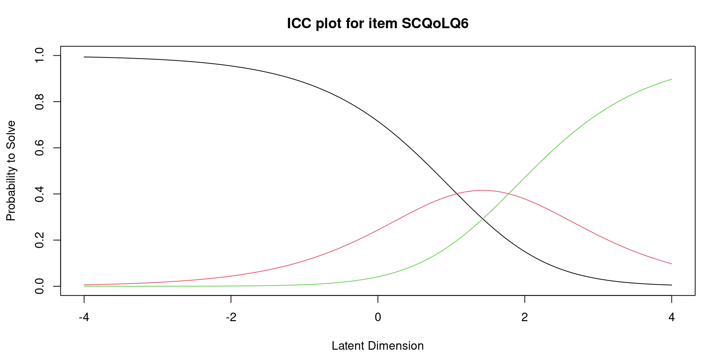
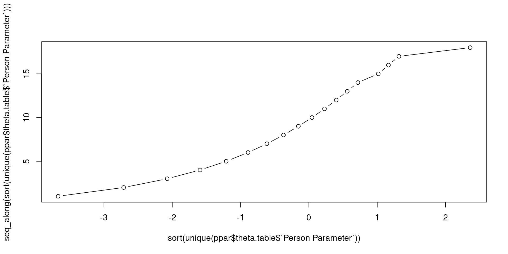
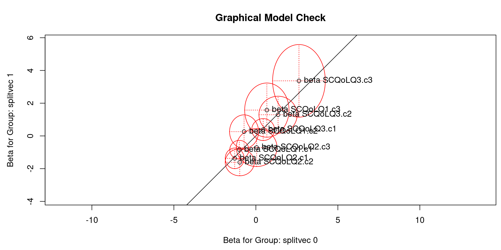

Rasch in R
Introduction
Introduction
1. Estimate the Rasch model
Exercise 1/3
FIKA
2. Test the Rasch model
Exercise 2/3
3. Testing local dependence
Exercise 3/3
Reporting
References
The Rasch model…
… for polytomous items1 (Erling B. Andersen 1977):
For person \(v\) the conditional probability that person \(v = 1,\ldots,n\) with ability \(\theta_v\) respond with score \(x\) on item \(i = 1,\ldots, k\) with difficulty \(\beta_{ix}\) is:
\[ P(X_{vi}=x|\theta_v=\theta)=\frac{\exp(x\theta-\beta_{ix})}{\sum_{l=1}^{m_i}\exp(l\theta-\beta_{il})} \]
where each item \(i\) has a certain number of response categories, denoted by \(m_i\).
Agenda
We demonstrate the functionality with an example using data from the The Skin Cancer Quality of Life (SCQoL) Questionnaire.
Using these data we show how to use R to:
- Estimate the Rasch model
- Test the Rasch model
- Test local dependence
Overview of packages
Linacre (2022) identified 11 R packages capable of Rasch estimation and analysis.
We focus on
eRm: does conditional ML (like RUMM2030)iarmandsirt(supplementary)
TAManltm: do MML (like ConQuest)
Data and instrument
Data used in this workshop are disease-specific quality of life (QoL) questionnaires increasingly used to provide patient-reported outcome measures in both malignant and non-malignant disease.
OBJECTIVE
To create, validate and test the psychometrics of the Skin Cancer Quality of Life (SCQoL), which was designed to measure health-related QoL in patients with non-melanoma skin cancer affecting any area and undergoing any therapy.
Patient Sample
These data contain…
R prerequisites
General R stuff
eRm::PCMis the same asPCMwheneRmpackage is loaded.
Data availability
Download data sets from biostat.ku.dk/Rasch
Data management
We load data:
Data management
The top six rows of our data are
# A tibble: 6 × 15
ID Sex Age SCQoLQ1 SCQoLQ2 SCQoLQ3 SCQoLQ4 SCQoLQ5 SCQoLQ6 SCQoLQ7
<dbl> <dbl> <dbl> <dbl> <dbl> <dbl> <dbl> <dbl> <dbl> <dbl>
1 1 1 57 1 1 0 1 0 0 1
2 3 2 76 1 0 0 0 0 0 2
3 6 1 52 0 0 0 0 0 0 1
4 7 1 69 1 2 1 0 0 0 1
5 8 1 72 0 1 0 0 0 0 1
6 11 1 65 1 0 0 0 1 0 1
# ℹ 5 more variables: SCQoLQ8 <dbl>, SCQoLQ9 <dbl>, SCQoLQ10 <dbl>,
# score9 <dbl>, score10 <dbl>Data management
Let’s remove missing and extreme total scores
Data management
We create an object containing the items:
Visualise distribution of item scores (RASCHplot)
1. Estimate the Rasch model
Introduction
1. Estimate the Rasch model
Exercise 1/3
FIKA
2. Test the Rasch model
Exercise 2/3
3. Testing local dependence
Exercise 3/3
Reporting
References
1. Estimate the Rasch model
The eRm (extended Rasch modelling) package in R provides users with a considerable set of tools for Rasch modelling for scale evaluation and general modelling.
Conditional ML (like RUMM2030)
The eRm package uses conditional maximum likelihood (CML) for the dichotomous and polytomous models.
CML (E. B. Andersen 1972) may be used to estimate models for which there are sufficient statistics available, as is the case for the family of Rasch models. That is, the item mean and person mean are sufficient statistics for the item and person measures, respectively.
CML is used for the dichotomous (RM), partial credit (PCM) and rating scale (RSM) models.
Estimate the Rasch model
The Rasch model is fitted to data using the PCM function from the eRm package:
Extract estimates etc.
Thresholds
Design Matrix Block 1:
Location Threshold 1 Threshold 2 Threshold 3
SCQoLQ1 0.23104 -1.11872 0.52776 1.28407
SCQoLQ2 -0.27020 -1.52101 -0.15937 0.86978
SCQoLQ3 0.85445 0.24378 0.77855 1.54104
SCQoLQ4 0.37951 -0.92557 0.50060 1.56348
SCQoLQ5 1.08748 1.39792 0.64986 1.21467
SCQoLQ6 1.42763 1.07520 1.78006 NA
SCQoLQ7 -0.36890 -3.03223 0.46684 1.45867
SCQoLQ8 1.07556 0.57059 3.00666 -0.35057
SCQoLQ9 -1.14027 -2.92896 -0.61895 0.12711@ Karl Noget at bemærke/vise? NA
The item category characteristic curves (IcCCs)
The IcCCs
The IcCCs

The IcCCs
Person parameters
Bemærk at det også virker for når der er manglende data.
Person parameters

Person parameters
Person-item maps
The estimates for persons and items can be viewed in the person-item map using the plotPImap command.
These figures help provide a representation of how the difficulty of items relates to the person-parameters for the fitted Rasch model.
The person-item map
@ Karl Noget at bemærke?Ja, Q8 og Q5 er ikke ordnede, Q6 har en manglende kategori. De bliver vist i ordnet rækkefølge ifht sværhedsgrad.
PARmat
PARmat <- function(x, par, byrow = FALSE) {
mi <- apply(x, 2, max, na.rm = TRUE)
cols <- do.call(c, lapply(1:9, function(i) 1:mi[i]))
rows <- do.call(c, lapply(1:9, function(i) rep(i, mi[i])))
thr <- matrix(NA, nrow = ncol(x), ncol = max(x))
for (i in 1:length(par)) {
thr[rows[i], cols[i]] <- par[i]
}
if(byrow) t(thr) else thr
}
thr <- PARmat(x = items, par = fit$etapar)Exercise 1/3
Introduction
1. Estimate the Rasch model
Exercise 1/3
FIKA
2. Test the Rasch model
Exercise 2/3
3. Testing local dependence
Exercise 3/3
Reporting
References
OBJECTIVE
Create, validate, and test the psychometrics of the Actinic Keratosis Quality of Life (AKQoL) questionnaire, which was designed to measure health-related QoL in patients with actinic keratosis.
Paper
Recreate AKQOL, Fig.2:
Exercise 1/3
- Load data
AKQOL.csvinto R and- create data frame of items
- visualise item score distribution using
RASCHplot::BARplot.
- Fit the Rasch model using
eRm::PCM. - Fit person parameters using
eRm::person.parameter. - Summarise results of the RM estimation using, e.g.:
summaryeRm::plotPImap,eRm::plotICC
FIKA
Introduction
1. Estimate the Rasch model
Exercise 1/3
FIKA
2. Test the Rasch model
Exercise 2/3
3. Testing local dependence
Exercise 3/3
Reporting
References
2. Test the Rasch model
Introduction
1. Estimate the Rasch model
Exercise 1/3
FIKA
2. Test the Rasch model
Exercise 2/3
3. Testing local dependence
Exercise 3/3
Reporting
References
Recall the IcCCs

ICC for polytomous items
@ Karl Hvad er pointen?

The conditional item characteristic curves (CICCs)
CICC
Grouping of total scores (for CICC)
1 2 3 4 5 6 7 8 9 10 11 12 13 14 16 17 18 23
25 22 23 17 12 7 13 9 2 2 4 2 2 2 3 1 2 1 CICC with grouping

INFIT and OUTFIT
Information-weighted mean square (INFIT) and unweighted mean square (OUTFIT) estimates are provided for each item and each person, which is customary in evaluating Rasch model-data fit. These estimates along with their \(\chi^2\) values, degrees of freedom, p-value, and t-test statistics are available with the itemfit and personfit commands, respectively, for items and persons. The INFIT t test statistics can also be plotted for items or persons using the plotPImap command, in which users may plot with or without confidence intervals. This plot may be particularly helpful in examining many items or persons efficiently.
Item fit statistics
The item fit information is obtained through a two-step process. First, we compute the person parameters along will all the residuals. Then, the investigation of the item fit statistics is a straightforward extension. The item fit statistics (i.e., INFIT/OUTFIT \(t\) or MSQ) are obtained using
Item fit statistics
Itemfit Statistics:
Chisq df p-value Outfit MSQ Infit MSQ Outfit t Infit t Discrim
SCQoLQ1 124.214 148 0.923 0.834 0.951 -0.983 -0.333 0.613
SCQoLQ2 118.143 148 0.966 0.793 0.868 -1.450 -1.084 0.627
SCQoLQ3 62.029 148 1.000 0.416 0.647 -2.197 -2.220 0.779
SCQoLQ4 133.548 148 0.797 0.896 0.914 -0.520 -0.612 0.638
SCQoLQ5 109.199 148 0.993 0.733 1.224 -0.292 0.965 0.474
SCQoLQ6 120.830 148 0.950 0.811 0.970 -0.261 -0.067 0.485
SCQoLQ7 142.123 148 0.621 0.954 0.956 -0.354 -0.328 0.521
SCQoLQ8 59.266 148 1.000 0.398 0.562 -1.999 -2.243 0.762
SCQoLQ9 132.523 148 0.814 0.889 0.900 -0.969 -0.888 0.581Item fit statistics
We cannot trust the P-values, because Chisq does not have a \(\chi^2\)-distribution. Nobody knows the asymptotic distribution of INFIT and OUTFIT. We need the R package iarm (item analysis in Rasch models):
this output shows * whenever a p-value is smaller then 5%.
Outfit se pvalue padj sig Infit se pvalue padj sig
SCQoLQ1 0.945 0.168 0.745 1 1.077 0.129 0.552 1
SCQoLQ2 0.927 0.14 0.601 1 1.006 0.12 0.958 1
SCQoLQ3 0.473 0.345 0.127 1 0.736 0.175 0.131 0.787
SCQoLQ4 1.05 0.185 0.787 1 1.03 0.131 0.818 1
SCQoLQ5 0.925 0.633 0.906 1 1.455 0.24 0.058 0.787
SCQoLQ6 0.94 0.525 0.908 1 1.046 0.219 0.833 1
SCQoLQ7 1.066 0.12 0.584 1 1.065 0.12 0.587 1
SCQoLQ8 0.444 0.404 0.169 1 0.647 0.224 0.116 0.787
SCQoLQ9 1.063 0.106 0.555 1 1.075 0.11 0.497 1
P value adjustment: BHItem-restscore
Item-total correlations and item-restscore correlations are routinely reported in classical test theory. Kreiner (2011) used the simple structure in the Rasch model to compute the expected values of the item-restscore correlation:
Differential item functioning
$SCQoLQ5
$SCQoLQ5$Sex
Exercise 2/3
Introduction
1. Estimate the Rasch model
Exercise 1/3
FIKA
2. Test the Rasch model
Exercise 2/3
3. Testing local dependence
Exercise 3/3
Reporting
References
Exercise 2/3
2.1) CICC
2.2) Item fit statistics (iarm)
2.3) DIF
3. Testing local dependence
Introduction
1. Estimate the Rasch model
Exercise 1/3
FIKA
2. Test the Rasch model
Exercise 2/3
3. Testing local dependence
Exercise 3/3
Reporting
References
3. Testing local dependence
Testing local dependence can be done by removing an item, fitting the Rasch model to the remaining items, splitting with respect to the removed item. The general method for testing local dependence in IRT is Yens Q3
We use the sirt (supplementary IRT) package for this:
We fit a Rasch model using sirt and save estimates \(\hat\beta\) of item parameters and estimate person locations \(\hat\theta\) (we use Warms weighted MLE)
and now we can calculate Yen’s Q3 statistic

Yen's Q3 Statistic based on an estimated theta score
*** 9 Items | 36 item pairs
*** Q3 Descriptives
M SD Min 10% 25% 50% 75% 90% Max
0.109 0.168 -0.195 -0.068 -0.026 0.088 0.221 0.297 0.554 Conventional interpretation: correlations should be close to zero. A large value is evidence of a problem with the scale, but since we do not know the asymptotic distribution we have to rely on a rule of thumb to decide when to reject model fit. An extensive simulation study indicated that “0.2 above the average” works well in many situations.
Exercise 3/3
Introduction
1. Estimate the Rasch model
Exercise 1/3
FIKA
2. Test the Rasch model
Exercise 2/3
3. Testing local dependence
Exercise 3/3
Reporting
References
Exercise 3/3
3.1) Yen’s Q3 statistic
3.2)
3.3)
3.4)
Reporting
Introduction
1. Estimate the Rasch model
Exercise 1/3
FIKA
2. Test the Rasch model
Exercise 2/3
3. Testing local dependence
Exercise 3/3
Reporting
References
Reporting
References
Introduction
1. Estimate the Rasch model
Exercise 1/3
FIKA
2. Test the Rasch model
Exercise 2/3
3. Testing local dependence
Exercise 3/3
Reporting
References